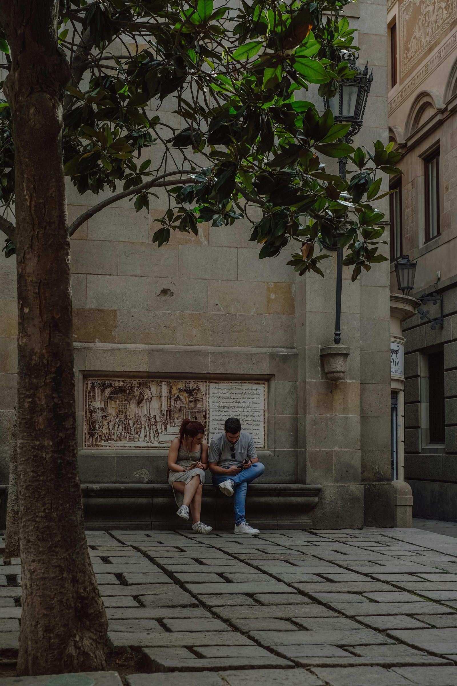

Waarom kiezen voor privélessen Italiaans?
Privélessen zijn volledig afgestemd op jouw niveau, tempo en doelen. Je krijgt maximale spreektijd, directe feedback en een flexibel rooster. Dit maakt leren sneller en persoonlijker dan in grote groepen.
Wat zijn de voordelen van kleine groepslessen Italiaans?
Kleine groepslessen combineren persoonlijke aandacht met sociale interactie. Je oefent conversatie met anderen, leert van elkaars fouten en betaalt vaak minder dan bij één-op-éénlessen.
Kan ik Italiaans ook online leren?
Ja! Online lessen bieden dezelfde kwaliteit als fysieke lessen, maar met meer flexibiliteit. Je kunt vanuit elke locatie deelnemen via interactieve platforms, ideaal voor drukke studenten of professionals
Hoe snel kan ik Italiaans leren?
De snelheid hangt af van je inzet en studieroutine. Met 2 tot 3 lessen per week, gecombineerd met zelfstudie en luisteroefeningen, kun je binnen enkele maanden eenvoudige gesprekken voeren.
Wat kost een cursus Italiaans?
De prijzen variëren: privélessen zijn duurder (meer persoonlijke aandacht), terwijl groepslessen voordeliger zijn. Bij thuisitaliaans krijg je altijd een gratis intakegesprek om de beste optie te kiezen.
Is Italiaans moeilijk om te leren?

Italiaans wordt vaak als een toegankelijke taal gezien voor Nederlandstaligen. Veel woorden lijken op het Frans of Spaans en de uitspraak is regelmatig en muzikaal.
Waar kan ik lessen volgen in Amsterdam?
In Amsterdam kun je zowel privélessen als kleine groepslessen volgen, met een focus op conversatie, cultuur en grammatica. Daarnaast zijn er hybride opties: deels online, deels in persoon.
Waarom leren bij Professor Alessio het verschil maakt
Het leren van Italiaans kan uitdagend zijn, vooral als je zowel online als in Amsterdam wilt oefenen. Bij thuisitaliaans begeleidt
Professor Alessio je stap voor stap, met lessen die volledig zijn afgestemd op jouw niveau, tempo en persoonlijke doelen. Of je nu je
Italiaans spreekvaardigheid wilt verbeteren, beter wilt schrijven, of cultuur en conversatie wilt begrijpen, Alessio zorgt dat elke les praktisch en interactief is.
Met zijn jarenlange ervaring en gepersonaliseerde aanpak leer je niet alleen grammatica en vocabulaire, maar pas je de taal ook direct toe in echte situaties, van dagelijkse gesprekken tot professionele communicatie. De combinatie van persoonlijke feedback, culturele context en motiverende oefeningen helpt leerlingen sneller vooruitgang te boeken en vertrouwen te ontwikkelen in het spreken van Italiaans.
Of je nu beginner, gevorderd of ergens daartussen bent, de lessen van Professor Alessio bieden een unieke leerervaring die gewone cursussen niet kunnen evenaren. Start vandaag nog en ontdek hoe plezierig en effectief Italiaans leren kan zijn wanneer je wordt begeleid door een deskundige docent.